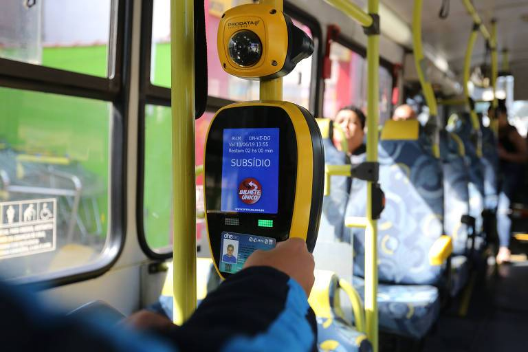

Mastering São Paulo's Public Transport: Timetables, Tickets, and Tips
Delve into São Paulo's extensive metro system with expert tips to streamline your travels through this vibrant Brazilian city. Navigate from the historic downtown to modern business districts seamlessly, ensuring you make the most of São Paulo's dynamic urban landscape.
In São Paulo, mastering the public transportation system is crucial for both local residents
and visitors. With an integrated system of subway, trains, and buses, the
city offers a
robust infrastructure that facilitates daily commuting and quick access to various parts of
the metropolis.
São Paulo boasts one of Brazil's most complex and extensive public transportation
systems.
The subway, with its colorful lines, extensively connects the city and serves as the
backbone of urban mobility. Spanning over 100 km, São Paulo's subway includes strategic
stations that enable efficient integration with other modes of transportation such as buses
and trains.
The CPTM (Companhia Paulista de Trens Metropolitanos) complements the system with
its train
lines, covering areas further from downtown São Paulo and providing essential
connections to
neighboring municipalities. Buses complete the network, covering virtually
the entire city
and its outskirts with routes ranging from exclusive lanes to local paths, offering
affordable and varied transportation options.
Integration between Buses, Subways, and Trains in São Paulo
The Bilhete Único card is the cornerstone of São Paulo's integrated transport system. This rechargeable card can be used across buses, metro, and trains, allowing seamless transfers without needing separate tickets. With the Bilhete Único, you pay a single fare for multiple transfers within a certain time period. For instance, a single fare covers transfers between buses, metro, and trains if completed within two hours. Major stations like Sé and Barra Funda serve as hubs where you can easily switch between different modes of transport, facilitating efficient and quick transfers. This integration offers cost savings, convenience, and broader accessibility, making it easier to travel across São Paulo. Understanding this system and using the Bilhete Único card can greatly improve your commuting experience in the city.
Key Information about São Paulo's Public Transport
Fare: The standard fare for buses, metro, and trains is R$ 4.40.
Bilhete Único: With the Bilhete Único card, the fare for multiple transfers
within a
two-hour period is included in the single fare price.
Subway operating hours: Operates from 4:40 AM to midnight (varies slightly
by line).
Trains (CPTM) operating hours: Operate from 4:00 AM to midnight.
Buses operating hours: Generally operate from 4:00 AM to midnight, but some
lines run 24 hours.
Transfer Points: Key stations for transfers include Sé, Barra Funda, and
Brás, where
passengers can switch between metro, trains, and buses.
Accessibility: Most stations and vehicles are equipped to accommodate
passengers with
disabilities, ensuring broader accessibility across the system.
Recharge Options: The Bilhete Único card can be recharged at metro
stations, lottery shops,
and various retail locations, as well as online.
Additional Services: Some metro and train stations offer amenities such as
free Wi-Fi,
bicycle parking, and commercial shops, enhancing the commuting experience.
Using this information can help you navigate São Paulo's public transport system more effectively and take full advantage of its extensive, integrated network. Whether you are a resident or a visitor, understanding how to utilize the Bilhete Único, knowing the fare details, and being aware of the operating hours can significantly enhance your commuting experience. By mastering the use of buses, metro, and trains, you can travel more efficiently across São Paulo and access its vibrant and diverse neighborhoods with ease.